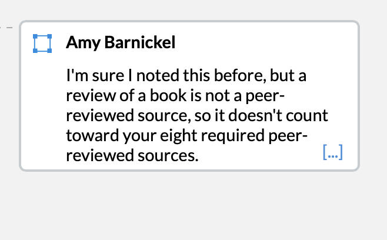
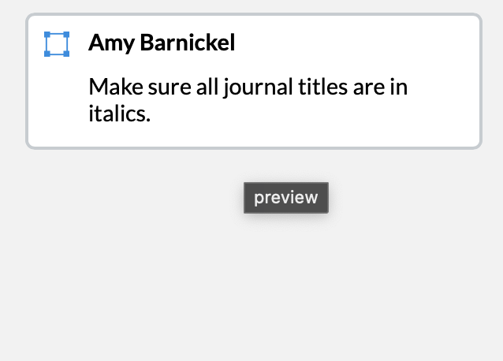
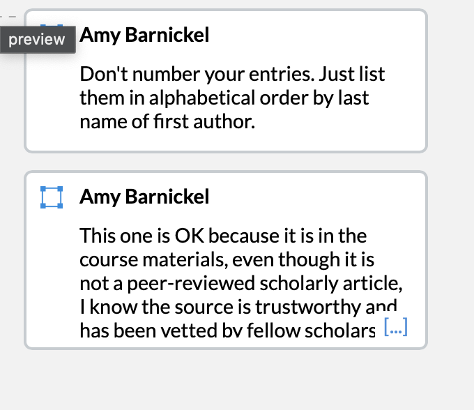

Sources
Annotated Bibliography
Framing Statement
This page shows my annotated bibliography of peer-reviewed scholarly articles I found in the UCF library databases, plus vetted course readings. Each entry has a full MLA citation, a summary of the source, and a connection to my own research project.
Why This Artifact Shows the Outcomes
This artifact shows Information Literacy because I had to learn how to find, evaluate, and cite real scholarly sources. At the start I thought any source I found in the UCF library was strong. Prof. Barnickel showed me that a book review is not a peer-reviewed source, so it did not count toward my eight required peer-reviewed sources. After that, I went back to the library, used the peer-reviewed and full-text filters, and found stronger articles. This artifact also shows Research Genre Production because the annotated bibliography is its own genre, with MLA rules I had to learn: italicized journal titles, entries listed alphabetically by the first author's last name (not numbered), full citation pieces, and clear connections to my own project.
Document Versions
- ↓ Final Version (Word)Revised bibliography in MLA format.
- ↓ Final Version (PDF)
- Original submission — to be added from Canvas
Instructor Feedback
Comments from Prof. Amy Barnickel (Canvas)



How I Revised
I worked through every comment Prof. Barnickel left. Because a book review is not peer-reviewed, I removed it from my eight required peer-reviewed sources and replaced it with a genuine peer-reviewed article. I italicized all journal titles, removed the numbering from my entries and re-ordered them alphabetically by the first author's last name, and kept the trustworthy course-materials source while making clear it counts as a vetted course reading rather than a peer-reviewed article.